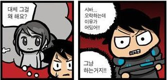
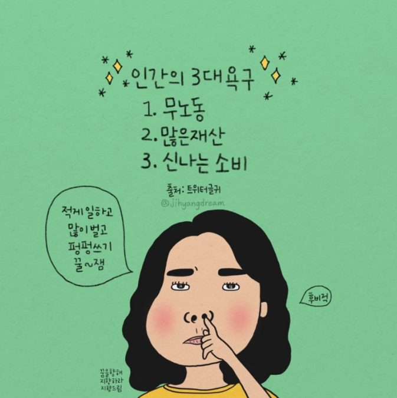
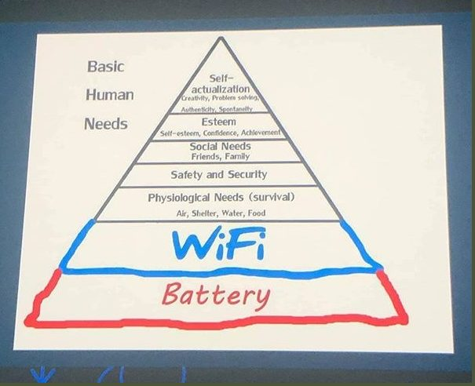
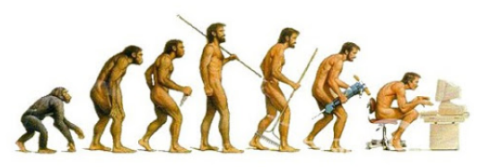
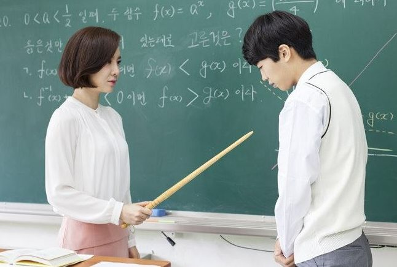
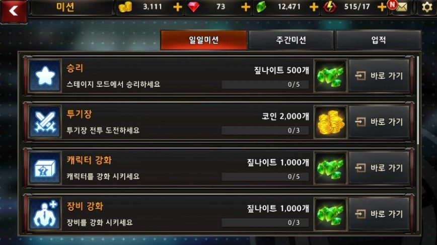
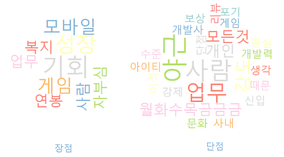
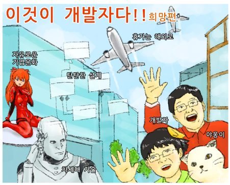
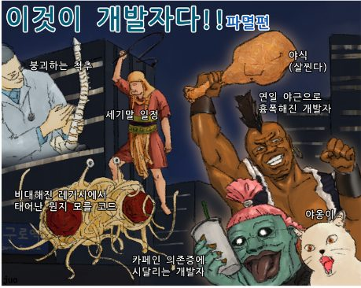
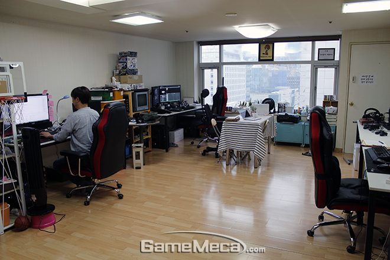

게이머에게 이유를 물으면 돌아오는 대답은 대개 "그냥 재밌으니까"입니다.
하지만 만드는 사람은 여기서 멈추면 안 됩니다.
"그냥"의 정체를 파고들면, 그 밑바닥에는 인간의 기본 욕구가 있습니다.
게임은 그 욕구를 건드리는 장치이기 때문입니다.
흔히 말하는 인간의 3대 욕구부터 시작해 봅시다.
먹고자 하는 욕구
자고자 하는 욕구
종족 보존의 욕구


욕구는 고정된 목록이 아니라 시대와 함께 확장됩니다. 그리고 게임은 언제나 그 시대의 욕구를 파고드는 콘텐츠였습니다.
인간의 욕구를 단계로 정리한 가장 유명한 모델입니다. 게임이 어느 층을 건드리는지 살펴보세요.
아래로 갈수록 결핍(하위) 욕구, 위로 갈수록 성장(상위) 욕구
| 8. 자기초월 | 타인을 돕고, 나 밖의 무엇과 연결되려는 욕구 |
| 7. 자아실현 | 자기 잠재력의 발휘 |
| 6. 심미적 욕구 | 질서 · 아름다움 · 균형의 추구 |
| 5. 인지적 욕구 | 알고 이해하고자 하는 욕구 |
| 4. 자존의 욕구 | 성취 · 인정 · 존경 · 능력 |
| 3. 소속의 욕구 | 수용 · 우정 · 친밀감 · 관계 |
| 2. 안전의 욕구 | 보안 · 안정 · 건강 · 집 · 돈 |
| 1. 생리적 욕구 | 공기 · 음식 · 물 · 잠 · 온기 |
레벨업과 업적은 자존(성취)을, 길드와 파티는 소속을, 수집과 탐험은 인지·심미를 건드립니다. 잘 만든 게임은 피라미드의 여러 층을 동시에 자극합니다 — 이 관점은 PART 2의 '보이지 않는 보상'으로 이어집니다.

주사위와 보드게임은 문명의 초기 유물에서도 발견됩니다.
놀이는 한가한 사람의 사치가 아니라, 학습하고 실험하는 인간의 본성에 가깝습니다.
그래서 이 강의는 게임을 이렇게 바라봅니다 —
Play는 가장 고도의 인간 활동이다.
욕구에서 재미까지 — 강의에서 소개한 재미 발생 프로세스입니다.
강의 슬라이드 「인간의 욕구에 의한 게임의 재미 발생 프로세스」 재구성
둘 다 '과제를 수행하고 성장하는 활동'인데, 왜 한쪽만 재미있을까요?


| 공부 | 게임 | |
|---|---|---|
| 시작 | 시켜서 (외적 강제) | 스스로 (자발적 참여) |
| 목표 | 멀고 추상적 | 가깝고 구체적 (오늘의 미션) |
| 피드백 | 느리고 드물 | 즉각적 (경험치 · 이펙트 · 사운드) |
| 보상 | 불확실 · 유예 | 확실 · 즉시 지급 |
| 실패 | 처벌로 이어짐 | 재도전으로 이어짐 |
같은 '노력과 성장'이라도, 목표를 잘게 쪼개고 · 즉시 피드백하고 · 반드시 보상하는 구조가 있으면 재미가 됩니다. 게임 디자인이 하는 일이 바로 이것입니다.
지망생 여러분이 향할 곳의 민낯도 함께 보여드립니다. 알고 가야 오래 갑니다.




그럼에도 이 업계가 매력적인 이유 —
"오늘도 어딘가의 사무실에선
새로운 1조 회사가 생긴다"
시작은 초라해도, 게임은 여전히 작은 팀이 세상을 뒤집을 수 있는 몇 안 되는 산업입니다.
게임의 뿌리는 인간의 기본 욕구다 — 욕구가 충족될 때 재미가 발생한다.
놀이(Play)는 인류와 함께해 온 가장 고도의 인간 활동이다.
공부와 게임의 차이는 구조의 차이 — 목표 · 피드백 · 보상의 설계가 재미를 만든다.